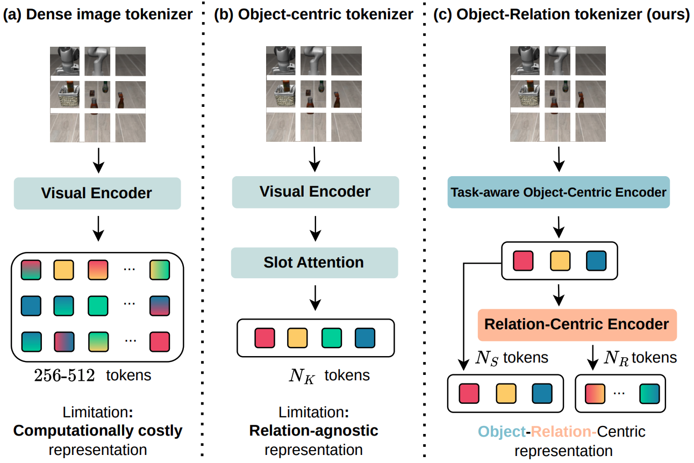
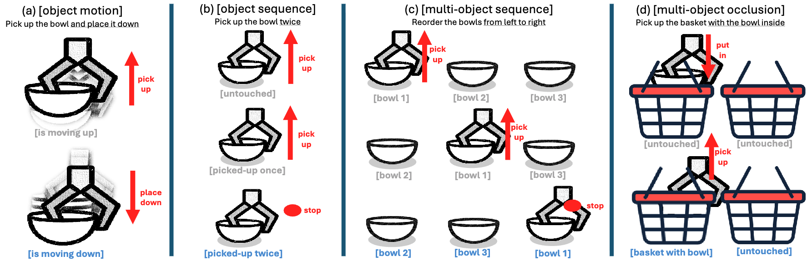
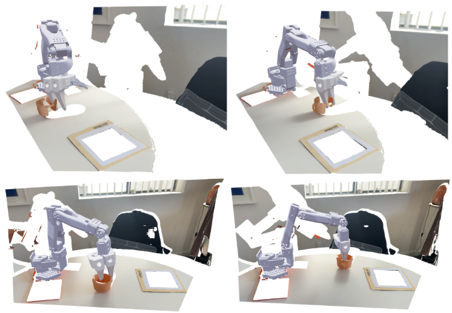

Toan Nguyen
CS PhD at USC
First-Year Ph.D. Student at the Department of Computer Science, University of Southern California, working with the Physical Superintelligence Lab & SLURM Lab.
Email: tientoan [at] usc [dot] edu
I am co-advised by Prof. Yue Wang and Prof. Daniel Seita. Prior to joining USC, I was an AI Resident at the FPT AI Center. I graduated with a bachelor's degree in Computer Science at Ho Chi Minh City University of Science.
I'm interested in anything that helps robots become more capable, generalizable, and trustworthy. My goal is to make robots not just perform tasks, but truly understand the world they act in.
Under Submission

RoboDesign1M: A Large-scale Dataset for Robot Design Understanding
Publications

SlotVLA: Towards Modeling of Object-Relation Representations in Robotic Manipulation



Other Projects
USC CSCI 699 - Robotic Perception
Active Perception with VLMs
We developed an active perception system leveraging vision-language models on a Dexmate Vega humanoid.

USC CSCI 699 - Robot Learning
3D Policy Learning with 3D Foundation Models
We leveraged 3D foundation models to reconstruct rich 3D scene representations for policy learning on an SO-100 robot arm, eliminating the need for expensive depth sensors.
Professional Services
- Conference Reviewer: ICRA 2026, WACV 2026, IROS 2025, ECCV 2024, ICRA 2024, IROS 2024
- Journal Reviewer: RA-L 2025
- Organizer: UROS, a student-run, cross-department robotics reading group and seminar series at USC.